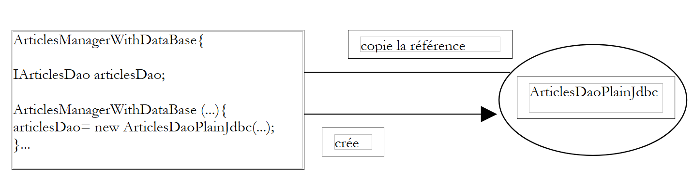
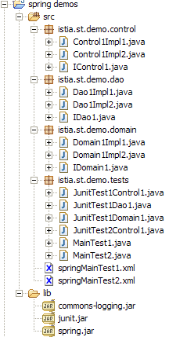

2. Artikel 1 – Spring IoC
Ziele dieses Dokuments:
- die Konfigurations- und Integrationsmöglichkeiten des Spring-Frameworks (http://www.springframework.org) kennenzulernen
- das Konzept von IoC (Inversion of Control), auch bekannt als Dependency Injection, zu definieren und anzuwenden
2.1. Konfiguration einer 3-Tier-Anwendung mit Spring
Betrachten wir eine klassische 3-Tier-Anwendung:
 |
Wir gehen davon aus, dass der Zugriff auf die Geschäftsschicht und DAO über Java-Schnittstellen gesteuert wird:
- die Schnittstelle [IArticlesDao] für die Datenzugriffsschicht
- die Schnittstelle [IArticlesManager] für die Geschäftslogikschicht
In der Datenzugriffsebene oder DAO-Ebene (Data Access Object) wird häufig mit einem SGBD und somit mit einem Treiber JDBC gearbeitet. Betrachten wir das Grundgerüst einer Klasse, die auf eine Artikeltabelle in einem SGBD zugreift:
Um eine Operation am SGBD durchzuführen, benötigt jede Methode ein [Connection]-Objekt, das die Verbindung zur Datenbank darstellt, über die der Datenaustausch zwischen dieser und dem Java-Code erfolgt. Um dieses Objekt zu erstellen, benötigt man vier Informationen:
den Klassennamen des Treibers JDBC des SGBD | |
die URL JDBC der zu verwendenden Datenbank | |
die Identität, unter der die Verbindung hergestellt wird | |
das Passwort für diese Identität |
Wie kann unsere zuvor erwähnte Klasse [ArticlesDaoPlainJdbc] diese Informationen abrufen? Es gibt verschiedene Möglichkeiten:
Lösung 1 – Die Informationen sind fest in der Klasse hinterlegt:
Der Nachteil dieser Lösung besteht darin, dass der Java-Code geändert werden muss, sobald sich diese Informationen ändern, beispielsweise bei einer Passwortänderung.
Lösung 2 – Die Informationen werden dem Objekt bei seiner Erstellung übergeben:
Hier erhält das Objekt bei seiner Erstellung die Informationen, die es für seine Arbeit benötigt. Das Problem verlagert sich somit auf den Code, der ihm die vier Informationen übermittelt hat. Wie hat er diese erhalten? Die folgende Klasse [ArticlesManagerWithDataBase] der Geschäftssschicht könnte ein Objekt [ArticlesDaoPlainJdbc] der Datenzugriffsschicht erstellen:
 |
Man sieht, dass auch hier die für die Erstellung des Objekts [ArticlesDaoPlainJdbc] erforderlichen Informationen dem Konstruktor des Objekts [ArticlesManagerWithDataBase] bereitgestellt werden. Man kann sich vorstellen, dass sie ihm von einer übergeordneten Schicht, wie beispielsweise der Benutzerschnittstellenschicht, übermittelt werden. So gelangt man Schritt für Schritt zur obersten Schicht der Anwendung. Aufgrund ihrer Position wird diese nicht von einer Schicht aufgerufen, die ihr die benötigten Konfigurationsinformationen übermitteln könnte. Es muss daher eine andere Lösung als die Konfiguration über den Konstruktor gefunden werden. Die übliche Lösung zur Konfiguration einer Anwendung auf der Ebene ihrer obersten Schicht ist die Verwendung einer Datei, in der alle Informationen enthalten sind, die sich im Laufe der Zeit ändern können. Es kann mehrere solcher Dateien geben. Beim Start der Anwendung erstellt dann eine Initialisierungsschicht alle oder einen Teil der Objekte, die für die verschiedenen Schichten der Anwendung erforderlich sind.
Es gibt eine große Vielfalt an Konfigurationsdateien. Der aktuelle Trend geht zur Verwendung von XML-Dateien. Diese Option wird von Spring genutzt. Die Datei zur Konfiguration eines [ArticlesDaoPlainJdbc]-Objekts könnte wie folgt aussehen:
Eine Anwendung ist eine Sammlung von Objekten, die Spring als „Beans“ bezeichnet, da sie dem Standard JavaBean zur Benennung von Gettern und Settern für private Felder eines Objekts folgen. Objekte, deren Aufgabe es in einer Anwendung ist, einen Dienst bereitzustellen, werden oft nur in einer einzigen Instanz erstellt. Man bezeichnet sie als Singletons. So wird in unserem hier untersuchten Beispiel einer mehrschichtigen Anwendung der Zugriff auf die Artikel-Datenbank durch ein einziges Exemplar der Klasse [ArticlesDaoPlainJdbc] gewährleistet. Bei einer Webanwendung bedienen diese Serviceobjekte mehrere Clients gleichzeitig. Es wird nicht für jeden Client ein eigenes Serviceobjekt erstellt.
Die oben gezeigte Spring-Konfigurationsdatei ermöglicht die Erstellung eines einzigen Service-Objekts vom Typ [ArticlesDaoPlainJdbc] in einem Paket namens [istia.st.articles.dao]. Die vier für den Konstruktor dieses Objekts erforderlichen Informationen werden innerhalb eines <bean>...</bean>-Tags definiert. Es gibt so viele solcher <bean>-Tags, wie Singletons erstellt werden sollen.
Zu welchem Zeitpunkt erfolgt die Erstellung der in der Spring-Datei definierten Objekte? Die Initialisierung einer Anwendung kann der Methode main dieser Anwendung übertragen werden, sofern sie über eine solche verfügt. Bei einer Webanwendung kann dies die Methode [init] des Haupt-Servlets sein. In jeder Anwendung gibt es eine Methode, die garantiert als erste ausgeführt wird. In der Regel erfolgt in dieser Methode die Erstellung der Singletons.
Nehmen wir ein Beispiel. Angenommen, wir möchten die oben genannte Klasse [ArticlesDaoPlainJdbc] mithilfe eines Tests JUnit testen. Eine Testklasse JUnit verfügt über eine Methode [setUp], die vor allen anderen Methoden ausgeführt wird. Dort wird das Singleton [ArticlesDaoPlainJdbc] erstellt.
Wenn man die Lösung wählt, bei der die Konfigurationsinformationen über den Konstruktor übergeben werden, ergibt sich folgende Testklasse:
Die aufrufende Klasse [TestArticlesPlainJdbc] muss die vier Informationen kennen, die für die Initialisierung des zu erstellenden Singletons [ArticlesDaoPlainJdbc] erforderlich sind.
Folgt man der Lösung, bei der die Konfigurationsinformationen über eine Konfigurationsdatei übergeben werden, könnte man unter Verwendung der oben beschriebenen Spring-Datei die folgende Testklasse erhalten.
Hier muss die aufrufende Klasse [TestSpringArticlesPlainJdbc] die für die Initialisierung des zu erstellenden Singletons erforderlichen Informationen nicht kennen. Sie muss lediglich Folgendes wissen:
- [springArticlesPlainJdbc.xml]: den Namen der oben beschriebenen Spring-Konfigurationsdatei
- [articlesDao]: den Namen des zu erstellenden Singletons
Eine Änderung der Konfigurationsdatei, die über diese beiden Elemente hinausgeht, hat keinerlei Auswirkungen auf den Java-Code. Diese Methode zur Konfiguration der Objekte einer Anwendung ist sehr flexibel. Zur Konfiguration muss die Anwendung lediglich zwei Dinge kennen:
- den Namen der Spring-Datei, die die Definitionen der zu erstellenden Singletons enthält
- die Namen dieser Singletons, die dem Java-Code dienen, um über die Konfigurationsdatei eine Referenz auf die Objekte zu erhalten, denen sie zugeordnet wurden
2.2. Abhängigkeitsinjektion und Kontrollumkehr
Lassen Sie uns nun den Begriff der Abhängigkeitsinjektion (Dependency Injection) einführen, der von Spring zur Konfiguration von Anwendungen verwendet wird. Man verwendet auch den Begriff Kontrollumkehr (IoC, Inversion of Control). Betrachten wir die Erstellung des Singletons [ArticlesManagerWithDataBase] aus der Geschäftslogikschicht unserer Anwendung:
 |
Um auf die Daten des SGBD zuzugreifen, muss die Geschäftslogik die Dienste eines Objekts nutzen, das die Schnittstelle [IArticlesDao] implementiert, beispielsweise ein Objekt vom Typ [ArticlesDaoPlainJdbc]. Der Code der Klasse [ArticlesManagerWithDataBase] könnte wie folgt aussehen:
public class ArticlesManagerWithDataBase implements IArticlesManager {
// eine Instanz des Datenzugriffs
private IArticlesDao articlesDao;
....
public ArticlesManagerWithDataBase (String driverClassName, String url, String user, String pwd, ...) {
...
// Erstellung des Datenzugriffsdienstes
articlesDao =(IArticlesDao)new ArticlesDaoPlainJdbc(driverClassName,url,user,pwd);
...
}
public ... doSomething(...){
...
}
}
Die Klasse [ArticlesDaoPlainJdbc] soll hier eine Schnittstelle [IArticlesDao] implementieren:
Um das für den Betrieb der Klasse erforderliche Singleton vom Typ [IArticlesDao] zu erstellen, verwendet der Konstruktor dieser Klasse explizit den Namen der Implementierungsklasse der Schnittstelle [IArticlesDao]:
Es besteht also eine harte Abhängigkeit im Code vom Klassennamen. Sollte sich die Implementierungsklasse der Schnittstelle [IArticlesDao] ändern, müsste der Code des oben genannten Konstruktors angepasst werden. Es bestehen folgende Beziehungen zwischen den Objekten:
 |
Die Klasse [ArticlesManagerWithDataBase] übernimmt selbst die Initiative zur Erstellung des Objekts [ArticlesDaoPlainJdbc], das sie benötigt. Um auf den Begriff „Kontrollumkehr“ zurückzukommen: Man könnte sagen, dass sie die „Kontrolle“ darüber hat, das Objekt zu erstellen, das sie benötigt.
Wenn man eine Testklasse JUnit für die Klasse [ArticlesManagerWithDataBase] schreiben müsste, könnte das etwa wie folgt aussehen:
Die Testklasse erstellt eine Instanz der Geschäftsklasse [ArticlesManagerWithDataBase], die wiederum in ihrem Konstruktor eine Instanz der Datenzugriffsklasse [ArticlesDaoPlainJdbc] erstellt.
Die Lösung mit Spring macht es überflüssig, dass die Geschäftsklasse [ArticlesManagerWithDataBase] den Namen [ArticlesDaoPlainJdbc] der benötigten Datenzugriffsklasse kennt. Dadurch kann diese geändert werden, ohne den Java-Code der Geschäftsklasse zu verändern. Mit Spring lassen sich beide Singletons – das der Datenzugriffsebene und das der Geschäftsebene – gleichzeitig erstellen. Die Spring-Konfigurationsdatei definiert ein neues Bean:
Die Neuerung besteht in dem Bean, das das zu erstellende Singleton der Geschäftsklasse definiert:
<bean id="articlesManager" class="istia.st.articles.domain.ArticlesManagerWithDataBase">
<property name="articlesDao">
<ref bean="articlesDao"/>
</property>
</bean>
- Die Klasse, die die Bean [articlesManager] implementiert, ist definiert: [ArticlesManagerWithDataBase]
- Das Feld [articlesDao] der Bean erhält über das Tag <property name="articlesDao"> einen Wert. Es handelt sich dabei um das in der Klasse [ArticlesManagerWithDataBase] definierte Feld:
Damit das Feld [articlesDao] von Spring und dessen Tag <property> initialisiert werden kann, muss das Feld dem Standard JavaBean entsprechen und es muss eine Methode [setArticlesDao] zur Initialisierung des Feldes [articlesDao] vorhanden sein. Man beachte den Namen der Methode, der sich ganz genau aus dem Namen des Feldes ableitet. Parallel dazu gibt es oft eine Methode [get...], um den Wert des Feldes abzurufen. Hier ist es die Methode [getArticlesDao]. In dieser neuen Version hat die Klasse [ArticlesManagerWithDataBase] keinen Konstruktor mehr. Sie benötigt ihn nicht mehr.
- Der Wert, der dem Feld [articlesDao] von Spring zugewiesen wird, ist der Wert des Beans [articlesDao], der in seiner Konfigurationsdatei definiert ist:
<bean id="articlesManager" class="istia.st.articles.domain.ArticlesManagerWithDataBase">
<property name="articlesDao">
<ref bean="articlesDao"/>
</property>
</bean>
<bean id="articlesDao" class="istia.st.articles.dao.ArticlesDaoPlainJdbc">
<constructor-arg index="0">
.............
</bean>
- Wenn Spring das Singleton [ArticlesManagerWithDataBase] erstellt, wird es auch das Singleton [ArticlesDaoPlainJdbc] erstellen:
- Spring erstellt einen Abhängigkeitsgraphen der Beans und stellt fest, dass die Bean [articlesManager] von der Bean [articlesDao] abhängt
- Es wird die Bean [articlesDao] erstellen, also ein Objekt vom Typ [ArticlesDaoPlainJdbc]
- anschließend erstellt es die Bean [articlesManager] vom Typ [ArticlesManagerWithDataBase]
Stellen wir uns nun einen Test JUnit für die Klasse [ArticlesManagerWithDataBase] vor. Dieser könnte wie folgt aussehen:
Verfolgen wir den Ablauf der Erstellung der beiden Singletons, die in der Spring-Datei mit dem Namen [springArticlesManagerWithDataBase.xml] definiert sind.
- Die oben genannte Methode [setUp] fordert eine Referenz auf das Bean mit dem Namen [articlesManager] an
- Spring durchsucht seine Konfigurationsdatei und findet die Bean „[articlesManager]“. Ist diese bereits erstellt, gibt Spring lediglich eine Referenz auf das Objekt (Singleton) zurück; andernfalls erstellt Spring die Bean.
- Spring erkennt die Abhängigkeit der Bean „[articlesManager]“ von der Bean „[articlesDao]“. Daher erstellt es das Singleton [articlesDao] vom Typ [ArticlesDaoPlainJdbc], sofern dieses noch nicht erstellt wurde (Singleton).
- Es erstellt das Singleton [articlesManager] vom Typ [ArticlesManagerWithDataBase]
Dieser Mechanismus lässt sich wie folgt schematisch darstellen:
 |
Zur Erinnerung: Das Grundgerüst der Klasse [ArticlesManagerWithDataBase] lautet:
Am Ende der Erstellung der Singletons durch Spring haben wir ein Objekt vom Typ [ArticlesManagerWithDataBase], dessen Feld [articlesDao] initialisiert wurde, ohne dass es weiß, wie. Man sagt, dass eine Abhängigkeit in das Objekt [ArticlesManagerWithDataBase] injiziert wurde. Man spricht auch von einer Umkehrung der Kontrolle: Es ist nicht mehr das Objekt [ArticlesManagerWithDataBase], das die Initiative ergreift, um selbst das Objekt zu erstellen, das die von ihm benötigte Schnittstelle [IArticlesDao] implementiert, sondern die Anwendung auf der obersten Ebene (bei ihrer Initialisierung) sorgt dafür, alle Objekte zu erstellen, die sie benötigt, und verwaltet dabei deren gegenseitige Abhängigkeiten.
Der Hauptvorteil der Konfiguration des Singletons [ArticlesManagerWithDataBase] über eine Spring-Datei besteht darin, dass nun die Implementierungsklasse für das Feld [articlesDao] der Klasse [ArticlesManagerWithDataBase] geändert werden kann, ohne dass deren Code geändert werden muss. Es reicht aus, den Namen der Klasse in der Definition des Beans [articlesDao] in der Spring-Datei zu ändern:
wird beispielsweise zu:
Die Bean [ArticlesManagerWithDataBase] wird mit dieser neuen Datenzugriffsklasse arbeiten, ohne es überhaupt zu merken.
2.3. Spring IoC in der Praxis
2.3.1. Beispiel 1
Betrachten wir die folgende Klasse:
Die Klasse verfügt über:
- zwei private Felder „name“ und „alter“
- die Lese- (get) und Schreibmethoden (set) für diese beiden Felder
- eine Methode „toString“, um den Wert des Objekts „[Personne]“ in Form einer Zeichenkette abzurufen
- eine Methode „init“, die von Spring bei der Erstellung des Objekts aufgerufen wird, sowie eine Methode „close“, die bei der Löschung des Objekts aufgerufen wird
Um Objekte vom Typ [Personne] zu erstellen, verwenden wir die folgende Spring-Datei:
Diese Datei wird den Namen config.xml tragen.
- Sie definiert zwei Beans mit den Schlüsseln „personne1“ und „personne2“ vom Typ [Personne]
- Sie initialisiert die Felder [nom, age] jeder Person
- Es definiert die Methoden, die beim erstmaligen Anlegen des Objekts [init-method] und beim Löschen des Objekts [destroy-method] aufgerufen werden sollen
Für unsere Tests verwenden wir eine einzige Testklasse JUnit, der wir nach und nach Methoden hinzufügen werden. Die erste Version dieser Klasse sieht wie folgt aus:
Anmerkungen:
- Um die in der Datei [config.xml] definierten Beans abzurufen, verwenden wir ein Objekt vom Typ [ListableBeanFactory]. Es gibt weitere Objekttypen, die den Zugriff auf die Beans ermöglichen. Das Objekt [ListableBeanFactory] wird in der Methode [setUp] der Testklasse abgerufen und in einer privaten Variablen gespeichert. Es steht somit für alle Testmethoden zur Verfügung.
- Die Datei [config.xml] wird im [ClassPath] der Anwendung, c.a.d, in einem der Verzeichnisse abgelegt, die von der Java-Virtual-Machine durchsucht werden, wenn sie nach einer von der Anwendung referenzierten Klasse sucht. Das Objekt [ClassPathResource] dient dazu, eine Ressource im [ClassPath] einer Anwendung zu suchen, in diesem Fall die Datei [config.xml].
- Spring kann Konfigurationsdateien in verschiedenen Formaten verwenden. Das Objekt [XmlBeanFactory] ermöglicht die Analyse einer Konfigurationsdatei im Format XML.
- Die Auswertung einer Spring-Datei liefert ein Objekt vom Typ [ListableBeanFactory], hier das Objekt „bf“. Mit diesem Objekt lässt sich ein Bean, der durch den Schlüssel „C“ identifiziert wird, über bf.getBean(C) abrufen.
- Die Methode [test1] fragt den Wert der Beans mit den Schlüsseln „personne1“ und „personne2“ ab und gibt ihn aus.
Die Struktur des Eclipse-Projekts unserer Anwendung sieht wie folgt aus:

Anmerkungen:
- Der Ordner [src] enthält den Quellcode. Der kompilierte Code wird in einen Ordner [bin] abgelegt, der hier nicht dargestellt ist.
- Die Datei [config.xml] befindet sich im Stammverzeichnis des Ordners [src]. Beim Erstellen des Projekts wird sie automatisch in den Ordner „[bin]“ kopiert, der Teil des Anwendungsordners „[ClassPath]“ ist. Dort wird sie vom Objekt „[ClassPathResource]“ gesucht.
- Der Ordner „[lib]“ enthält drei für die Anwendung erforderliche Java-Bibliotheken:
- commons-logging.jar und spring-core.jar für die Spring-Klassen
- junit.jar für die Klassen JUnit
- Der Ordner [lib] ist ebenfalls Teil des Ordners [ClassPath] der Anwendung
Die Ausführung der Methode [test1] des Tests JUnit liefert folgende Ergebnisse:
Anmerkungen:
- Spring protokolliert mithilfe der Bibliothek [commons-logging.jar] eine Reihe von Ereignissen. Diese Protokolle ermöglichen es uns, die Funktionsweise von Spring besser zu verstehen.
- Die Datei [config.xml] wurde geladen und anschließend
- Der Vorgang*
die Erstellung des Beans [personne1] ausgelöst. Das entsprechende Spring-Protokoll ist hier zu sehen. Da in der Definition des Beans [personne1] versehentlich [init-method="init"] angegeben wurde, wurde die Methode [init] des erstellten Objekts [Personne] ausgeführt. Die entsprechende Meldung wird angezeigt.
- Der Vorgang
hat den Wert des angelegten Objekts [Personne] angezeigt.
- Das gleiche Phänomen wiederholt sich für die Schlüssel-Bean [personne2].
- Die letzte Operation
personne2 = (Personne) bf.getBean("personne2");
System.out.println("personne2=" + personne2.toString());
hat nicht zur Erstellung eines neuen Objekts vom Typ [Personne] geführt. Wäre dies der Fall gewesen, wäre die Methode [init] angezeigt worden, was hier jedoch nicht der Fall ist. Dies ist das Prinzip des Singletons. Spring erstellt standardmäßig nur eine einzige Instanz der Beans aus seiner Konfigurationsdatei. Es handelt sich um einen Objektreferenzdienst. Wenn man ihn nach der Referenz eines noch nicht erstellten Objekts fragt, erstellt er dieses und gibt eine Referenz darauf zurück. Wenn das Objekt bereits erstellt wurde, gibt Spring lediglich eine Referenz darauf zurück.
- Man kann feststellen, dass von der Methode [close] des Objekts [Personne] keine Spur zu finden ist, obwohl wir sie in der Definition der Beans [destroy-method=close] geschrieben hatten. Möglicherweise wird diese Methode erst ausgeführt, wenn der vom Objekt belegte Speicher vom Garbage Collector freigegeben wird. Zu diesem Zeitpunkt ist die Anwendung bereits beendet, sodass die Ausgabe auf dem Bildschirm keine Wirkung mehr hat. Dies muss noch überprüft werden.
Da wir nun die Grundlagen einer Spring-Konfiguration verstanden haben, werden wir unsere Erklärungen von nun an etwas zügiger vorantreiben.
2.3.2. Beispiel 2
Betrachten wir die folgende neue Klasse [Voiture]:
Die Klasse verfügt über:
- drei private Felder: „Typ“, „Marke“ und „Eigentümer“. Diese Felder können über öffentliche get- und set-Methoden der Bean initialisiert und ausgelesen werden. Sie können ebenfalls mithilfe des Konstruktors „Auto(String, String, Person)“ initialisiert werden. Die Klasse verfügt zudem über einen Konstruktor ohne Argumente, um dem Standard JavaBean zu entsprechen.
- eine Methode „toString“, um den Wert des Objekts „[Voiture]“ in Form einer Zeichenkette abzurufen
- eine Methode „init“, die von Spring unmittelbar nach der Erstellung des Objekts aufgerufen wird, sowie eine Methode „close“, die bei der Löschung des Objekts aufgerufen wird
Um Objekte vom Typ [Voiture] zu erstellen, verwenden wir die folgende Spring-Datei [config.xml]:
Diese Datei ergänzt die bisherigen Definitionen um eine Bean mit dem Schlüssel „voiture1“ vom Typ [Voiture]. Um diese Bean zu initialisieren, hätte man schreiben können:
Anstatt diese bereits vorgestellte Methode zu wählen, haben wir uns hier dafür entschieden, den Konstruktor „Auto(String, String, Person)“ der Klasse zu verwenden. Außerdem definiert die Bean [voiture1] die Methode, die beim ersten Erstellen des Objekts [init-method] aufgerufen werden soll, sowie die Methode, die beim Löschen des Objekts [destroy-method] aufgerufen werden soll.
Für unsere Tests verwenden wir die bereits vorgestellte Testklasse JUnit und fügen ihr die folgende Methode [test2] hinzu:
Die Methode [test2] ruft die Bean [voiture1] ab und zeigt sie an.
Die Struktur des Eclipse-Projekts bleibt gegenüber dem vorherigen Test unverändert. Die Ausführung der Methode [test2] aus dem Test JUnit liefert folgende Ergebnisse:
Anmerkungen:
- Die Methode [test2] fordert eine Referenz auf die Bean [voiture1] an
- Zeile 4: Spring beginnt mit der Erstellung der Bean [voiture1], da diese Bean noch nicht erstellt wurde (Singleton)
- Zeile 6: Da die Bean [voiture1] auf die Bean [personne2] verweist, wird diese wiederum erstellt
- Zeile 7: Die Bean [personne2] wurde erstellt. Anschließend wird ihre Methode [init] ausgeführt.
- Zeile 9: Spring gibt an, dass es einen Konstruktor verwenden wird, um die Bean [voiture1] zu erstellen
- Zeile 10: Die Bean [voiture1] wurde erstellt. Anschließend wird ihre Methode [init] ausgeführt.
- Zeile 11: Die Methode [test2] gibt den Wert der Bean [voiture1] aus
2.3.3. Beispiel 3
Wir führen die folgende neue Klasse [GroupePersonnes] ein:
Ihre beiden privaten Mitglieder sind:
Mitglieder: ein Array mit den Mitgliedern der Gruppe
groupesDeTravail: ein Dictionary, das eine Person einer Arbeitsgruppe zuordnet
Hier ist zu beachten, dass die Klasse [GroupePersonnes] keinen Konstruktor ohne Argumente definiert, um dem Standard JavaBean zu entsprechen. Wir erinnern daran, dass es bei Fehlen jeglichen Konstruktors einen „Standard“-Konstruktor gibt, nämlich den Konstruktor ohne Argumente, der keine Aktion ausführt.
Hier soll gezeigt werden, wie Spring die Initialisierung komplexer Objekte ermöglicht, beispielsweise Objekte mit Feldern vom Typ Array oder Dictionary. Wir fügen der vorherigen Spring-Datei [config.xml] eine neue Bean hinzu:
- Mit dem Tag <list> lässt sich ein Feld vom Typ Array oder ein Feld, das die Schnittstelle List implementiert, mit verschiedenen Werten initialisieren.
- Mit dem Tag <map> lässt sich dasselbe mit einem Feld erreichen, das die Schnittstelle `Map` implementiert.
Für unsere Tests verwenden wir die bereits vorgestellte Testklasse JUnit und fügen ihr die folgende Methode [test3] hinzu:
Die Methode [test3] ruft die Bean [groupe1] ab und zeigt sie an.
Die Struktur des Eclipse-Projekts bleibt unverändert gegenüber dem vorherigen Test. Die Ausführung der Methode [test3] aus dem Test JUnit liefert folgende Ergebnisse:
Anmerkungen:
- Die Methode [test3] fordert eine Referenz auf die Bean [groupe1] an
- Zeile 4: Spring beginnt mit der Erstellung dieser Bean
- Da die Bean [groupe1] auf die Beans [personne1] und [personne2] verweist, werden diese beiden Beans erstellt (Zeilen 6 und 9) und ihre init-Methode ausgeführt (Zeilen 7 und 10)
- Zeile 11: Die Bean [groupe1] wurde erstellt. Ihre Methode [init] wird nun ausgeführt.
- Zeile 12: Anzeige, die von der Methode [test3] angefordert wurde.
2.4. Spring zur Konfiguration von dreischichtigen Webanwendungen
2.4.1. Allgemeine Architektur der Anwendung
Wir möchten eine 3-Tier-Anwendung mit folgender Struktur erstellen:
 |
- Die drei Schichten werden durch die Verwendung von Java-Schnittstellen voneinander unabhängig gemacht
- Die Integration der drei Schichten erfolgt über Spring
- Für jede der drei Schichten werden separate Pakete erstellt, die „Control“, „Domain“ und „Dao“ heißen. Ein zusätzliches Paket enthält die Testanwendungen.
Die Struktur der Anwendung unter Eclipse könnte wie folgt aussehen:

2.4.2. Die Datenzugriffsschicht DAO
Die Schicht DAO wird die folgende Schnittstelle implementieren:
package istia.st.demo.dao;
public interface IDao1 {
public int doSometingInDaoLayer(int a, int b);
}
- Schreiben Sie zwei Klassen Dao1Impl1 und Dao1Impl2, die die Schnittstelle IDao1 implementieren. Die Methode Dao1Impl1.doSomethingInDaoLayer gibt a+b zurück, und die Methode Dao1Impl2.doSomethingInDaoLayer gibt a-b zurück.
- Schreiben Sie eine Testklasse JUnit, die die beiden vorherigen Klassen testet
2.4.3. Die Geschäftslogik-Schicht
Die Geschäftsebene implementiert die folgende Schnittstelle:
package istia.st.demo.domain;
public interface IDomain1 {
public int doSomethingInDomainLayer(int a, int b);
}
- Schreiben Sie zwei Klassen Domain1Impl1 und Domain1Impl2, die die Schnittstelle IDomain1 implementieren. Diese Klassen verfügen über einen Konstruktor, der einen Parameter vom Typ IDao1 entgegennimmt. Die Methode Domain1Impl1.doSomethingInDomainLayer erhöht a und b um eins und übergibt diese beiden Parameter anschließend an die Methode doSomethingInDaoLayer des empfangenen Objekts vom Typ IDao1. Die Methode Domain1Impl2.doSomethingInDomainLayer hingegen verringert a und b um jeweils eine Einheit, bevor sie dasselbe tut.
- Eine Testklasse JUnit schreiben, die die beiden vorherigen Klassen testet
2.4.4. Die Benutzeroberflächenschicht
Die Benutzeroberflächenschicht implementiert die folgende Schnittstelle:
package istia.st.demo.control;
public interface IControl1 {
public int doSometingInControlLayer(int a, int b);
}
- Schreiben Sie zwei Klassen Control1Impl1 und Control1Impl2, die die Schnittstelle IControl1 implementieren. Diese Klassen verfügen über einen Konstruktor, der einen Parameter vom Typ IDomain1 entgegennimmt. Die Methode Control1Impl1.doSomethingInControlLayer erhöht a und b um eins und übergibt diese beiden Parameter anschließend an die Methode doSomethingInDomainLayer des empfangenen Objekts vom Typ IDomain1. Die Methode Control11Impl2.doSomethingInControlLayer hingegen verringert a und b um jeweils eine Einheit, bevor sie dasselbe tut.
- Eine Testklasse JUnit schreiben, die die beiden vorherigen Klassen testet
2.4.5. Integration mit Spring
- Erstellen Sie eine Spring-Konfigurationsdatei, die festlegt, welche Klassen jede der drei vorangegangenen Schichten verwenden soll
- Schreiben Sie eine Testklasse JUnit, die verschiedene Spring-Konfigurationen verwendet, um die Flexibilität der geschriebenen Anwendung hervorzuheben
- Schreiben Sie eine eigenständige Anwendung (Methode „main“), die der Schnittstelle IControl1 zwei Parameter übergibt und das von der Schnittstelle gerenderte Ergebnis anzeigt.
2.4.6. Eine Lösung
2.4.6.1. Das Eclipse-Projekt

Die Archive des Ordners [lib] wurden dem Ordner [ClassPath] des Projekts hinzugefügt.
2.4.6.2. Das Paket [istia.st.demo.dao]
Die Schnittstelle:
Eine erste Implementierungsklasse:
Eine zweite Implementierungsklasse:
2.4.6.3. Das Paket [istia.st.demo.domain]
Die Schnittstelle:
Eine erste Implementierungsklasse:
Eine zweite Implementierungsklasse:
2.4.6.4. Das Paket [istia.st.demo.control]
Die Schnittstelle
Eine erste Implementierungsklasse:
Eine zweite Implementierungsklasse:
2.4.6.5. Die Konfigurationsdateien [Spring]
Eine erste: [springMainTest1.xml]:
Ein zweites [springMainTest2.xml]:
2.4.6.6. Das Testpaket [istia.st.demo.tests]
Ein Test vom Typ [main]:
Die in der Eclipse-Konsole angezeigten Ergebnisse:
Ein weiterer Test unter Verwendung der zweiten Konfigurationsdatei [Spring]:
Die in der Eclipse-Konsole angezeigten Ergebnisse:
Und schließlich ein JUnit-Test:
2.5. Conclusion
Das Spring-Framework bietet sowohl bei der Anwendungsarchitektur als auch bei der Konfiguration echte Flexibilität. Wir haben das Konzept IoC verwendet, eine der beiden Säulen von Spring. Die andere Säule ist AOP (Aspect Oriented Programming), die wir nicht vorgestellt haben. Sie ermöglicht es, einer Klassenmethode per Konfiguration „Verhalten“ hinzuzufügen, ohne deren Code zu ändern. Vereinfacht gesagt ermöglicht AOP das Filtern von Aufrufen bestimmter Methoden:
 |
- Der Filter kann vor oder nach der Zielmethode M oder in beiden Fällen ausgeführt werden.
- Die M-Methode ignoriert die Existenz dieser Filter. Diese werden in der Spring-Konfigurationsdatei definiert.
- Der Code der M-Methode wird nicht verändert. Filter sind Java-Klassen, die instanziiert werden müssen. Spring stellt vordefinierte Filter bereit, insbesondere zur Verwaltung von Transaktionen von SGBD.
- Filter sind Beans und werden als solche in der Spring-Konfigurationsdatei als Beans definiert.
Ein gängiger Filter ist der Transaktionsfilter. Nehmen wir eine Methode M der Geschäftslogikschicht, die zwei untrennbare Operationen an Daten durchführt (Arbeitseinheit). Sie ruft zwei Methoden M1 und M2 der Schicht DAO auf, um diese beiden Operationen durchzuführen.
 |
Da sich die Methode M in der Fachschicht befindet, abstrahiert sie vom Datenträger dieser Daten. Sie muss beispielsweise nicht davon ausgehen, dass sich die Daten in einem SGBD befinden und dass sie die beiden Aufrufe der Methoden M1 und M2 in eine Transaktion von SGBD einbetten muss. Es ist Aufgabe der Schicht DAO, sich um diese Details zu kümmern. Eine Lösung für das vorgenannte Problem besteht daher darin, in der Schicht DAO eine Methode anzulegen, die ihrerseits die Methoden M1 und M2 aufruft, die sie in eine Transaktion von SGBD einbinden würde.
 |
Die Filterlösung AOP ist flexibler. Sie ermöglicht es, einen Filter zu definieren, der vor dem Aufruf von M eine Transaktion startet und nach dem Aufruf je nach Fall ein Commit oder ein Rollback durchführt.
 |
Dieser Ansatz bietet mehrere Vorteile:
- Sobald der Filter definiert ist, kann er auf mehrere Methoden angewendet werden, beispielsweise auf alle, die eine Transaktion benötigen
- die so gefilterten Methoden müssen nicht neu geschrieben werden
- Da die zu verwendenden Filter über die Konfiguration definiert werden, können sie geändert werden
Zusätzlich zu den Konzepten IoC und AOP bietet Spring zahlreiche Hilfsklassen für dreischichtige Anwendungen:
- für JDBC, SqlMap (iBatis), Hibernate, JDO (Java Data Object) in der Schicht DAO
- für das Modell MVC in der Benutzeroberflächenschicht
Weitere Informationen: http://www.springframework.org.